Backpropagation, Batch Training, and Incremental Training
Keywords: backpropagation, batch training, incremental training
Backpropagation has been developed in ‘An Introduction to Backpropagation and Multilayer Perceptrons’. And we have known why backpropagation is called backpropagation but not forward propagation or something else. And in this post, we will discuss some applications of backpropagation and some useful concepts.
Batch v.s. Incremental Training[^1]
In both LMS and BP algorithms, the error in each update process step is not MSE but SE $e=t_i-a_i$ which is calculated just by a data point of the training set. This is called a stochastic gradient descent algorithm. And why it is called ‘stochastic’ is because error at every iterative step is approximated by a random selected train data point but not the whole data set nor the actual error given by performance index. This is also called ‘on-line’ learning, because each time a data point is used and ‘on-line’ data aways comes to us one by one, and each one can be used independently to the algorithm. So incremental training is also a name for this process.
When we use the whole data set to approximate the error, this is called batch training. This algorithm calculating gradient after all inputs are applied to the network before parameters are updated. For example, when all inputs have equal probability, the mean square error becomes:
$$
\begin{aligned}
F(\boldsymbol{x})&=\mathbb E[\boldsymbol{e}^T\boldsymbol{e}]\
&=\mathbb E[(\boldsymbol{t}-\boldsymbol{a})^T(\boldsymbol{t}-\boldsymbol{a})]\
&=\frac{1}{Q}\sum^{Q}_{q=1}(\boldsymbol{t}_q-\boldsymbol{a}_q)^T(\boldsymbol{t}_q-\boldsymbol{a}_q)
\end{aligned}\tag{1}
$$
Rather than changing MSE into SE, this algorithm just replaced the MSE with the average of the whole training set error. A statistics professor at MIT said: ‘what our statisticians do every day is replacing expectation with average’. This average is closer to the MSE than SE is. Then the total gradient is:
$$
\begin{aligned}
\nabla F(\boldsymbol{x})&=\nabla{\frac{1}{Q}\sum^{Q}{q=1}(\boldsymbol{t}_q-\boldsymbol{a}_q)^T(\boldsymbol{t}_q-\boldsymbol{a}_q)}\
&=\frac{1}{Q}\sum^{Q}{q=1}\nabla{(\boldsymbol{t}_q-\boldsymbol{a}_q)^T(\boldsymbol{t}_q-\boldsymbol{a}_q)}
\end{aligned}\tag{2}
$$
Then the update step is converted to:
$$
W^m(k+1)=W^m(k)-\frac{\alpha}{Q}\sum^{Q}{q=1}\boldsymbol{s}^m_q(\boldsymbol{a}^{m-1}_q)^T\
\boldsymbol{b}^m(k+1)=\boldsymbol{b}^m(k)-\frac{\alpha}{Q}\sum^{Q}{q=1}\boldsymbol{s}^m_q\cdot 1\tag{3}
$$
Using Backpropagation
Building a toy BP program is a good way to go deeper inside into the algorithm. The details of the design of the algorithm could be found in ‘The Backpropagation Algorithm (Part I)’ and ‘The Backpropagation Algorithm (Part II)’. And the task is consist of three essential parts:
- Choice of network architecture
- The algorithm used to train to a network would convergent
- Generalization
Choice of Network Architecture
How many layers and how many neurons are necessary for a certain task is the key point in designing a network. For instance, to approximate the target functions
$$
g(p)=1+\sin(\frac{i\pi}{4}\cdot p)\tag{4}
$$
where for $-2\leq p \leq 2$ and $i={1,2,4,8}$. And these four different functions look like:
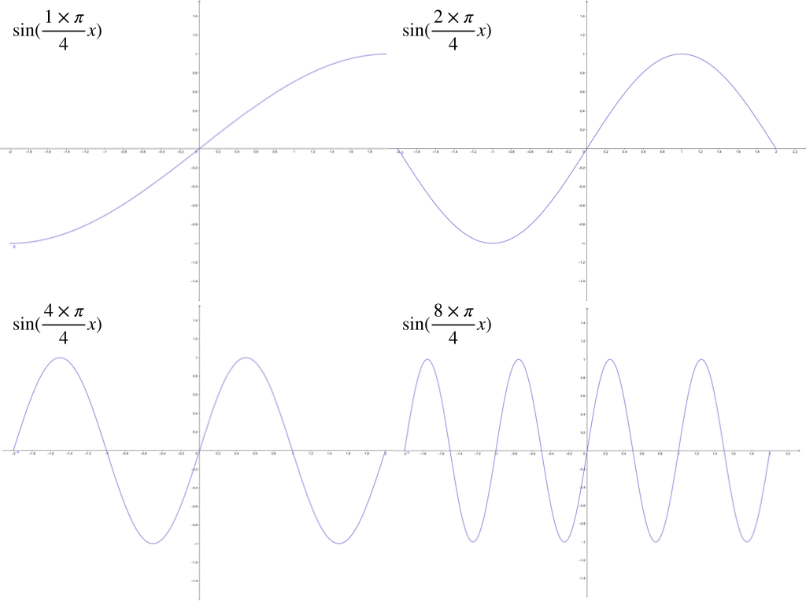
at the interval of $[-2,2]$
1-3-1 Neural Network
And the architecture we used here for approximating four functions is a 1-3-1 net. And the BP algorithm is used. Then the process of changing of the curve for $g(p)=1+\sin(\frac{\pi}{4}\cdot p)$ is like:
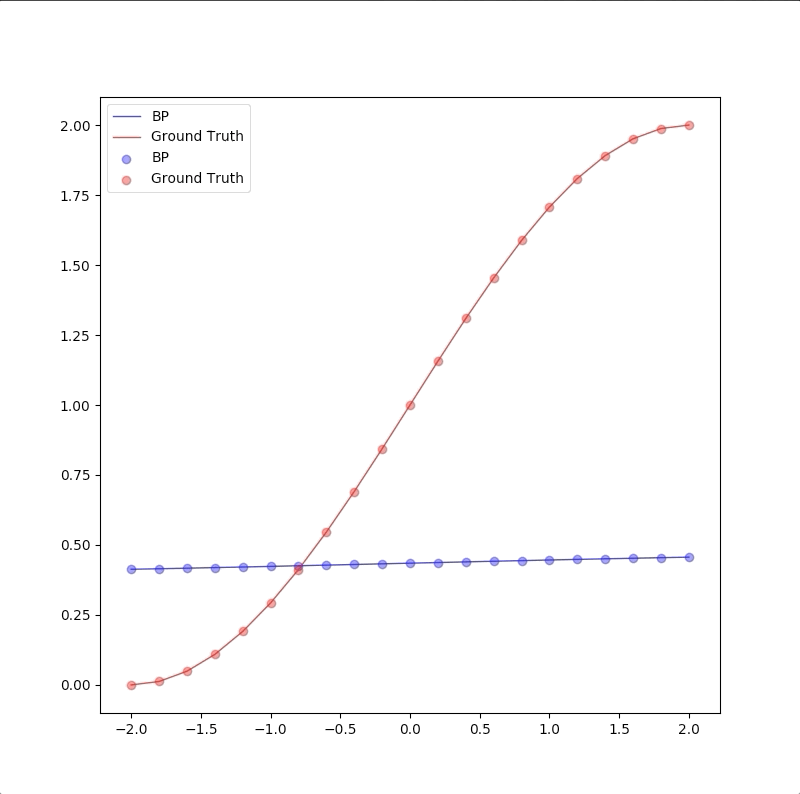
And for the $g(p)=1+\sin(\frac{2\pi}{4}\cdot p)$
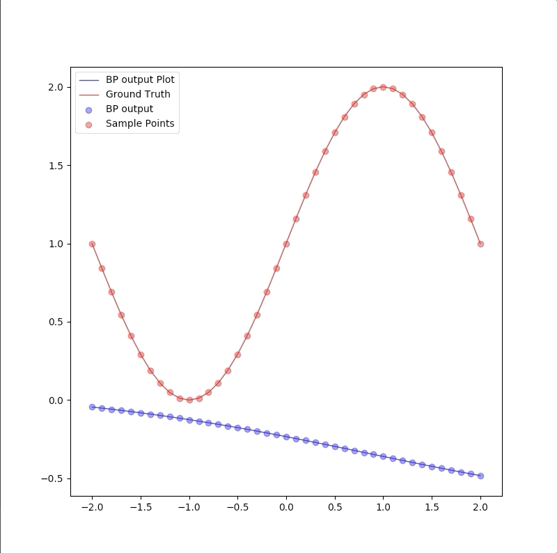
And for the $g(p)=1+\sin(\frac{4\pi}{4}\cdot p)$
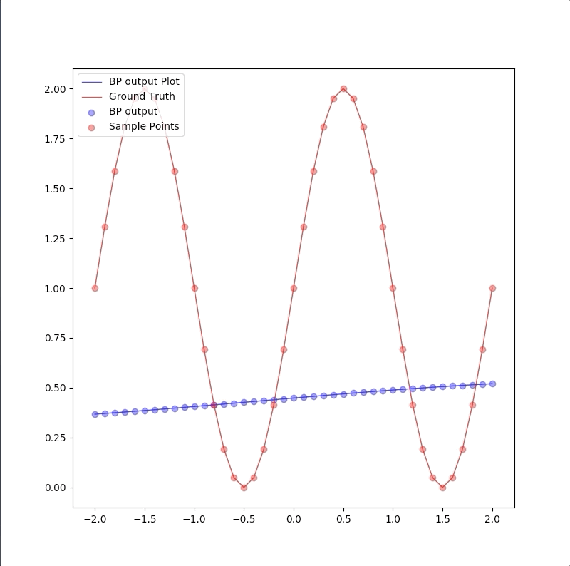
And for the $g(p)=1+\sin(\frac{8\pi}{4}\cdot p)$
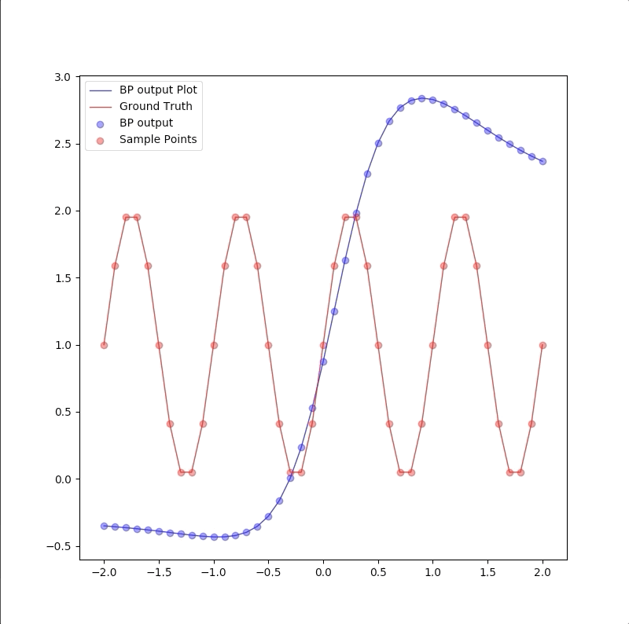
The four final approximate results of these for the function is:
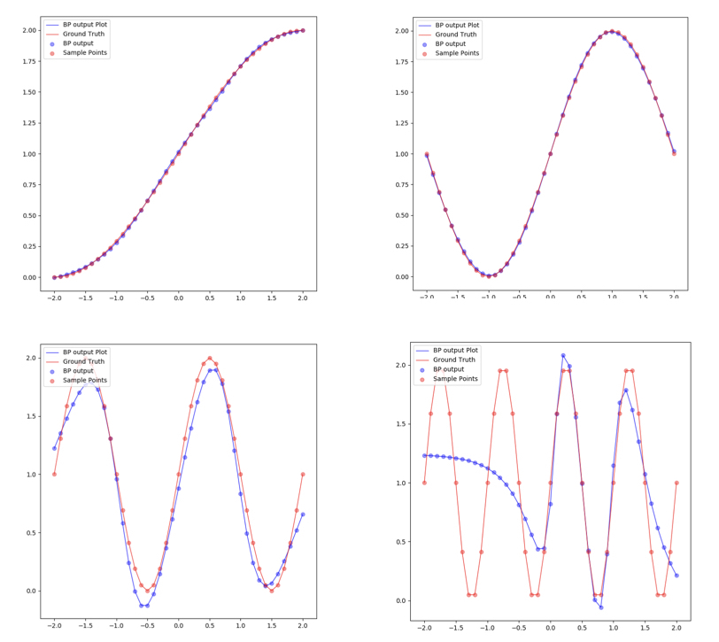
Limit of 1-3-1 network has been illustrated above and the capacity of 1-3-1 network can only approximate $g(p)=1+\sin(\frac{i\pi}{4}\cdot p)$ for $i={1,2,3,4}$.
$g(p)=1+\sin(\frac{8\pi}{4}\cdot p)$ can not be regressed by 1-3-1 for its flexibility is not enough for the target function. This can also be concluded by the property of these three neurons in the hidden layer whose transfer function is log-sigmoid. Because these three neurons have only three ‘steps’(which has been described at [](to be done)). These three steps are trained to approximate the three crests of the target functions. And when the target functions have more than 3 crests (including 3 crests), 1-3-1 can not regress the target function precisely.
1-2-1, 1-3-1, 1-4-1, 1-5-1 networks for $g(p)=1+\sin(\frac{6\pi}{4}\cdot p)$
The target function $g(p)=1+\sin(\frac{6\pi}{4}\cdot p)$ has 3 crests at iterval $[-2,2]$ and 4 different types of network are used in the approximation:
The process of 1-2-1 neuron network for $g(p)=1+\sin(\frac{6\pi}{4}\cdot p)$ is like:
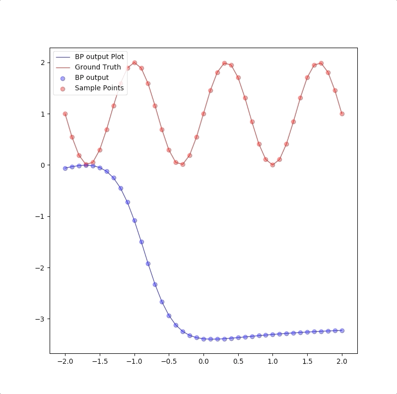
The process of 1-3-1 neuron network for $g(p)=1+\sin(\frac{6\pi}{4}\cdot p)$ is like:

The process of 1-4-1 neuron network for $g(p)=1+\sin(\frac{6\pi}{4}\cdot p)$ is like:
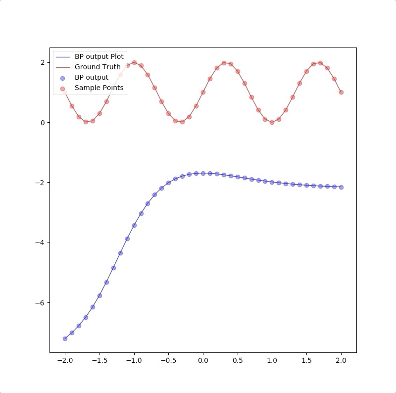
The process of 1-5-1 neuron network for $g(p)=1+\sin(\frac{6\pi}{4}\cdot p)$ is like:

And the final results of these four networks are:
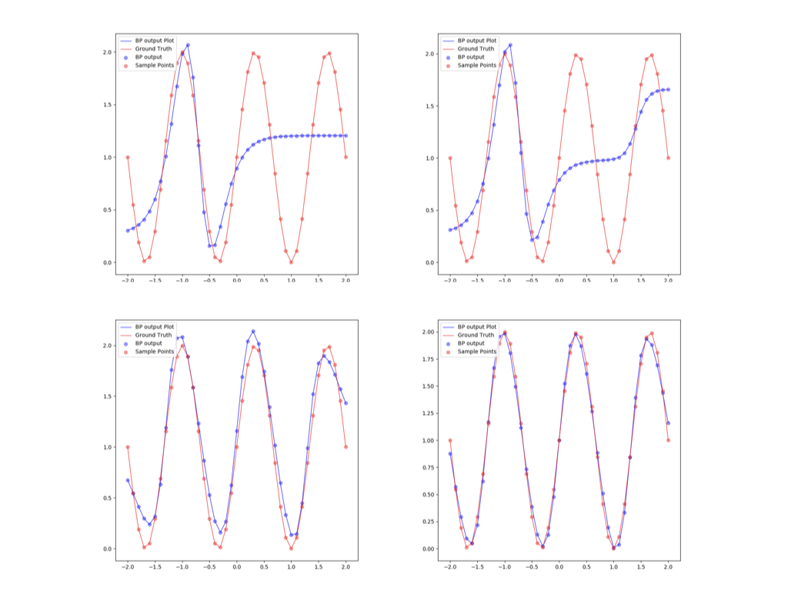
This summary of the comparison of the results of the four different networks are:
- the more neurons in hidden layers the more flexible entire network is
- if the flexibility of the network is not sufficient for the target function, it is not a good model for the task.
- although the flexibility of the network is sufficient, the training algorithm may also not be able to converge to the global minimum
Convergence Analysis
When the training algorithm did not converge to the global minimum, the responses of the network can not give an accurate approximation to the desire function. This is just because the BP algorithm used here is not like LMS who worked under the condition that the performance index function is quadratic and it has only had one minimum. The performance index of multiple layers network has a lot of local minimum and many parameters in the learning algorithm worked together to the final local minimum and during the process, saddle points also affect the convergence of the algorithm.
BP can not guarantee to convergent to the global minimum. Many factors can affect the process. And now let’s observe the different initial value of the parameters of the network which lead to different local minimums of the performance index:
Convergent to a local minimum
Initial values:
|layer|neuron|initial weights and bias|
|:—:|:—:|:—:|
|2|1|$[0.42965179 -0.07152415]$|
|2|2|$[0.16361572 0.79774829]$|
|2|3|$[0.73702272 0.75144977]$|
|3|1|$[0.76338542 0.95722099 -0.11531554 0.20356626]$|
and the process of the algorithm is:
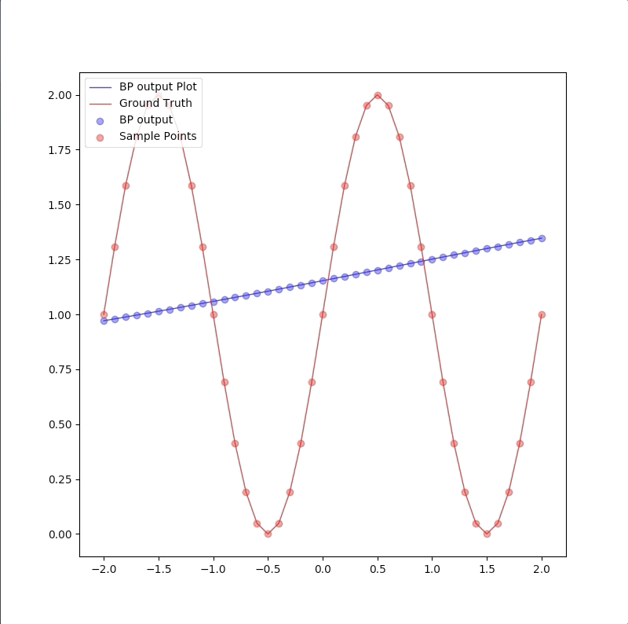
the descent process of MSE is:
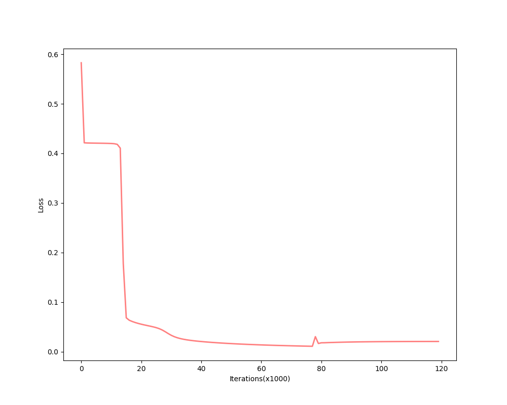
and the final converged parameters:
| layer | neuron | initial weights and bias |
|---|---|---|
| 2 | 1 | $[0.93900718 -0.01797782]$ |
| 2 | 2 | $[-4.82660011 4.52635542]$ |
| 2 | 3 | $[4.80297794 4.51769764]$ |
| 3 | 1 | $[13.6902581 5.32639145 -5.37517373 -5.8557322]$ |
Convergent to another local minimum
Initial values:
|layer|neuron|initial weights and bias|
|:—:|:—:|:—:|
|2|1|$[-18.61882866 12.96283924]$|
|2|2|$[ 11.35841636 -20.15384594]$|
|2|3|$[ 2.77601854 22.87956077]$|
|3|1|$[-44.15374244 -58.65710547 -34.40432363 -78.4400726 ]$|
and the process of the algorithm is:
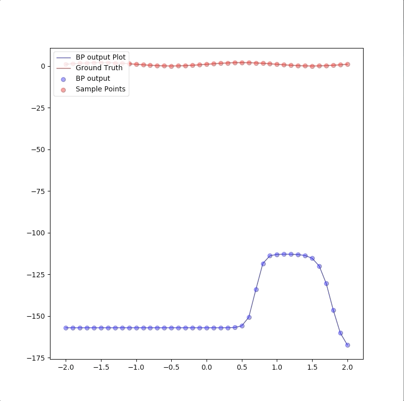
the descent process of MSE is:
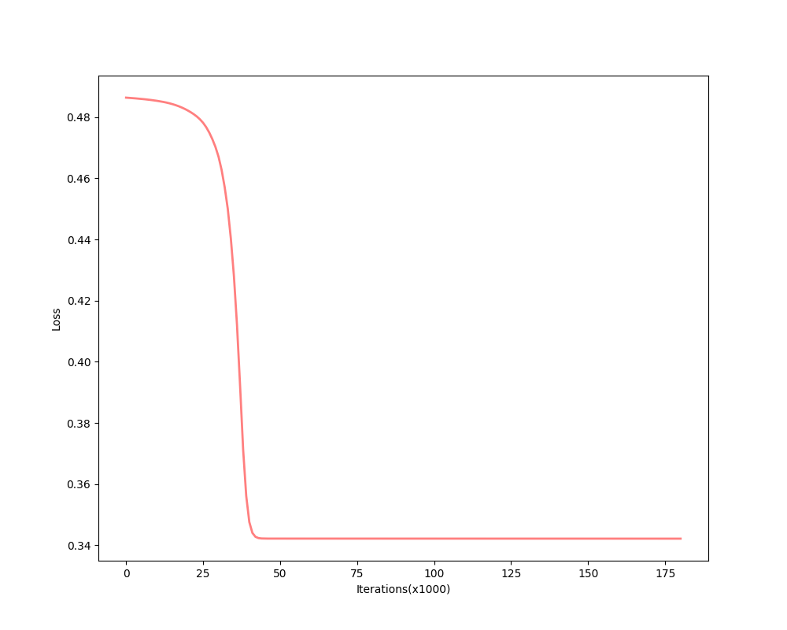
and the final converged parameters:
| layer | neuron | initial weights and bias |
|---|---|---|
| 2 | 1 | $[-19.84672298 -21.74627601]$ |
| 2 | 2 | $[-31.5629279 -67.20354561]$ |
| 2 | 3 | $[2.77601496 22.8795743 ]$ |
| 3 | 1 | $[0.98462573 -47.6630436 22.41340957 -21.62233846]$ |
These two examples imply that the initial values of parameters primarily affect the local minimum the algorithm would converge to. not only the initial values but also other parameters of the learning algorithm would affect the final results.
The convergence of the BP algorithm in training multiple neuron network can not guarantee to the global minimum for the multilayer network has more local minimums than one global minimum in quadratic function.
Generalization
For we have only a finite number of training samples(examples of proper network behavior) which means our task is approximating the function that has more input/output pairs than we used in training. And the behavior of the inputs which were not used in the training process is called generalization. For instance, the target function is:
$$
g(p)=1+\sin(\frac{\pi}{4}\cdot p)\tag{5}
$$
and the training set are the inputs $p=-2.0,-1.6,\cdots,1.6,2.0$ and their corresponding outputs. These 11 pairs are used in training the following the two network:
1-2-1
1-2-1 give a good generalization that is when the points are not used in the train, the blue line is also close to the red line:
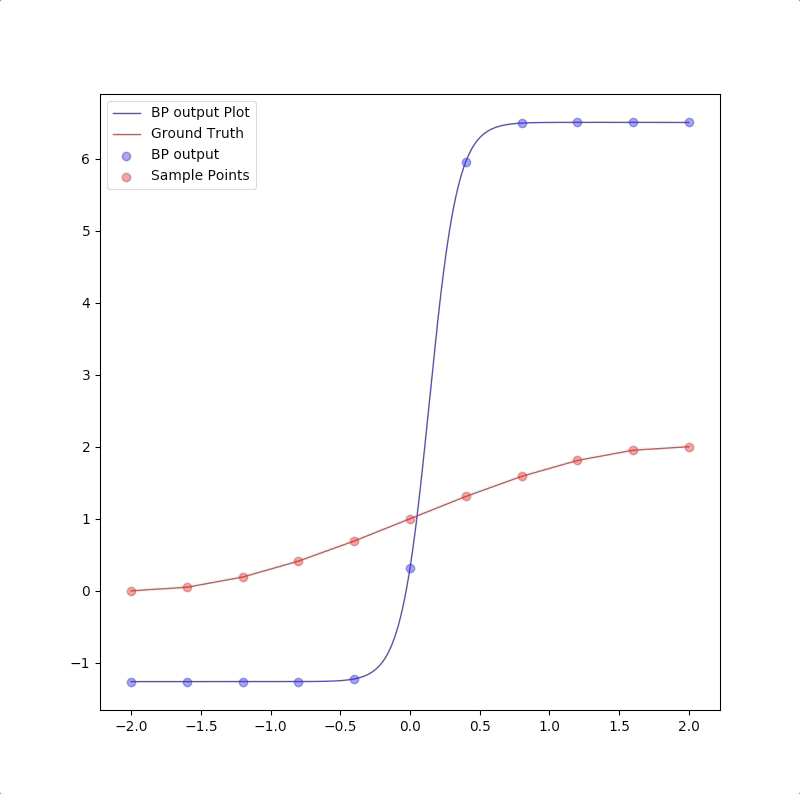
1-9-1
However, a more powerful network, a 1-9-1 network gives closer approximation than 1-2-1 network at training points that the blue circles are close to red circles. But at other points, which is not used in training, represented by the blue line is far from the approximated function. This means 1-9-1 gives a bad generalization:
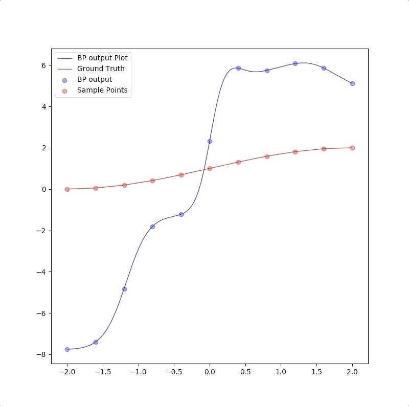
the summary of these two experiments are:
- parameters in the model should be less than the number of points in the training set(this can also be described as the number of training data should be more than the parameter in the model)
- Ockham’s Razor is a good rule in future work of neuron network design: when the smaller networks could work, a bigger network is not necessary.
References
[^1]: Demuth, Howard B., Mark H. Beale, Orlando De Jess, and Martin T. Hagan. Neural network design. Martin Hagan, 2014.